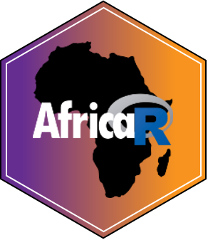

class: center, middle, inverse, title-slide # R Community and Free Resources ### <br><span style="font-size:40px;font-weight:600">Heather Turner<br>Forwards Taskforce for Women and Underrepresented Groups</span> ### 14 March 2020 <br><br> <img src="forwards_296x296.png" alt="Forwards logo" width="100" style="padding-right:50px">  <br><br> <i class="fas fa-link "></i> <a href="https://heatherturner.net/talks/r-community">heatherturner.net/talks/r-community</a><br> <i class="fab fa-twitter "></i> <a href="https://twitter.com/heathrturnr">HeathrTurnr</a> --- class: middle # R Community --- # AfricaR > Our mission is to achieve improved representation by encouraging, inspiring, and empowering the African population of all genders who are underrepresented in the global R community. .pull-left-30[  ] .pull-right-64[ So far: - Connect R Users from different regions - Established several R User Groups - Organized 2 satRday conferences Follow on Twitter [@AfricaRUsers](https://twitter.com/AfricaRUsers). ] --- # Leadership Team Leadership team expanded for 2020 .pull-left[ - **Shelmith Kariuki - Kenya** - **Denis Irorere - Nigeria** - Mohammed Ali - Egypt - Ahmadou Dicko - Senegal - Anicet Ebou - Ivory Coast - Nelda - Uganda - Vebashini Naidoo - South Africa ] .pull-right[  ] ??? representatives from Egypt, Senegal, Ivory Coast, Nigeria, Uganda, Kenya and South Africa --- # Plans for 2020 - Write governing documents (mission statement, CoC) - Rotating curator Twitter account - Tutorials in French - Website (events calendar, blog) - Package(s) to address African needs, e.g. NLP library that supports Arabic, Swahili, etc. --- # Forwards R Foundation taskforce to widen participation of underepresented groups - Social media - Twitter: @R_Forwards - Blog: https://forwards.github.io/blog/ - Community - Conferences - On-ramps - Surveys - Teaching --- # Why R? Foundation Initiated to support Why R? Conference in Poland Money raised also supports - pre-meetings in Europe - support grant for women in data science Extending support to other regions including Africa --- # R Foundation and R Consortium The R Foundation is a not-for-profit organization to support R. - Provides financial support to CRAN, R Core and R Foundation members - Publishes The R Journal - Oversees the useR! conference series The R Consortium is a group of business that support R. - Provide financial support to R User Groups and Conferences - Funds coding and community projects --- # R User Groups In Africa: Senegal, Ivory Coast, Nigeria, Kenya, Tanzania, Eswatini, South Africa - new group starting in Botswana! Typical meetups - Talks, e.g. - Tutorial, e.g. [Importing data into R](https://www.meetup.com/Bauchi-R-User-Group-BauchiRUG/events/254472581/), [ggplot2 for data visualisation](https://www.meetup.com/Abidjan-R-users-Meetup/events/264563481/) --- # R User Groups Other types of meetup - Remote talk [Dar es Salaam User Group](https://twitter.com/iamreddave/status/1139923218217799686?s=20) - Watch party [rstudio::conf](https://www.meetup.com/LagosRUsers/events/267900212/) (live) - Videos e.g. from [useR! conference](https://www.meetup.com/R-User-Group-Rhein-Neckar/events/245919611/) - Work through book e.g. [R for Data Science](https://www.meetup.com/Joburg-R-Users-Group/events/269296647/) - [Tidy Tuesday Workshop](https://www.meetup.com/Cardiff-R-User-Group/events/269231773/) - Hackathon e.g. [Open Data Day](https://zurich-r-user-group.github.io/hackathon.html) or [Zindi machine learning challenge](https://twitter.com/proggieug/status/1148182225227325440?s=20) - Informal meetup to help each other [lunchR](https://www.meetup.com/portland-r-user-group/events/268122016/) or [TalkRs](https://www.meetup.com/Cardiff-R-User-Group/events/266632566/) --- # R-Ladies > R-Ladies is a worldwide organization whose mission is to promote gender diversity in the R community. - Meetup groups: Benin, Ethiopia, Nigeria, South Africa - R-Ladies Remote ([@RLadiesRemote](https://twitter.com/rladiesremote)) - reading group (~1/month): Next up, [Agile Data Science with R](https://github.com/EdwinTh/ADSwR) - coffee chat (~1/month): guided 1 hour chat about R topics - [Abstract review for conferences](https://docs.google.com/forms/d/e/1FAIpQLSck8FBjNWjziI8pPIoCBlf5J4oQ_6pzeUdbQ1HjYfJ2bNDwDw/viewform) - R-Ladies community slack [sign up](https://rladies-community-slack.herokuapp.com/) - many channels: where in the world, events, r-help --- # R4DS Online Learning Community https://www.rfordatasci.com/ Originally to work through R 4 Data Science, now a general learning community. Join Slack to get help as you learn. --- # Tidy Tuesday https://github.com/rfordatascience/tidytuesday Practice your R skills on a new data set (designed for beginners) - New data set released each week (Monday) - Practice data wrangling and data visualisation - Get help on R4DS or R-Ladies community slack --- # RStudio Community https://community.rstudio.com/ Online discussion forum (sign-up but no installation required) Discussion topics - (tidyverse) packages: dplyr, ggplot2 - R markdown - RStudio IDE - Machine Learning and Modelling --- # Stackoverflow https://stackoverflow.com/ Q&A site for programming questions. R questions shold be tagged with [r] plus relevant package/topic tags. Questions must have a reproducible example (reprex), the **reprex** R package helps with this. Best to search for answers to begin with. See the tour for more information: https://stackoverflow.com/tour. --- # Twitter It is so useful there is a book about it! [t4rstats.com](www.t4rstats.com). The main hashtag is #rstats. Accounts to follow - [@botswana_r](https://twitter.com/botswana_r) - [@EswatiniUseR](https://twitter.com/EswatiniUseR) - [@AfricaRUsers](https://twitter.com/AfricaRUsers) - [@R_Forwards](https://twitter.com/R_Forwards) - [@RLadiesGlobal](https://twitter.com/RLadiesGlobal) - [@_R_Foundation](https://twitter.com/_R_Foundation) - [@RConsortium](https://twitter.com/RConsortium) - [@WeAreRLadies](https://twitter.com/WeAreRLadies) --- # Other - Facebook: used by some user groups - LinkedIn: main group: "The R Project for Statistical Computing" --- # Conferences Johannesburg satRday (https://joburg2020.satrdays.org/) - tutorials and talks Various international conferences have diversity scholarships: - useR! (https://www.r-project.org/conferences/) - rstudio::conf (https://rstudio.com/conference/) Forwards [tips on applying for scholarships ](https://github.com/forwards/conferences/blob/0fa6412e1d1629dc9957959dbd51490b861e7b88/diversity_scholarships.md) List of R conferences: https://jumpingrivers.github.io/meetingsR/events.html. --- class: middle # Free Resources --- # Conference videos/material Many R conferences put talk videos and tutorial material online useR! 2019 - talks: [useR! 2019 Toulouse Talks on YouTube](https://www.youtube.com/playlist?list=PL4IzsxWztPdliwImi5JLBC4BrvqxG-vcA) - tutorials: https://www.user2019.fr/tutorials/ rstudio::conf - talks: https://resources.rstudio.com/rstudio-conf-2020 - tutorials: https://github.com/rstudio-conf-2020 --- # More conference videos/material satRday_zaf - talks: [Joburg 2019](https://www.youtube.com/channel/UC-HLbsCyJ3sDTwq5BgB8T_A) Ihaka lecture series - https://www.auckland.ac.nz/en/science/about-the-faculty/department-of-statistics/ihaka-lecture-series.html --- # Blogs Many useful blog posts on new and existing packages, how to do X in R - R-bloggers (https://www.r-bloggers.com/): use RSS reader like feedly, inoreader - RWeekly (https://rweekly.org/): can get RSS feed/follow on Twitter - rladies-blogs channel on R-Ladies Community Slack --- # Podcasts Sina Rüeger highlights several R/data science podcasts https://sinarueeger.github.io/post/podcasts/ She links to this list: https://jumpingrivers.github.io/podcasts/technical-podcasts.html There is also the Women in Data Science podcast https://www.widsconference.org/podcast.html --- # Online books Books created with the **bookdown** package: https://bookdown.org/. In particular - R for Data Science - R Graphics Cookbook - Fundamentals of Data Visualization Some (all?) Manning books can be read online for free, e.g. - [Build a career in data science](https://www.manning.com/books/build-a-career-in-data-science?a_aid=buildcareer&a_bid=76784b6a) - [Practical Data Science with R](https://www.manning.com/books/practical-data-science-with-r-second-edition?query=r) --- # More online books Several R books on leanpub can be bought for a price you choose, from free - [Introduction to Data Science](https://leanpub.com/datasciencebook) - [Exploratory Data Analysis with R](https://leanpub.com/exdata) Other - [Modern Statistics for Modern Biology](http://web.stanford.edu/class/bios221/book/) - [ggplot2](https://ggplot2-book.org/) ??? Converting to PDF: https://community.rstudio.com/t/bookdown-books-on-the-web-downloading-and-converting-to-pdf/30268/3 --- # Workshop materials - The R-Ladies groups share their material online and you can search for material via this great shiny app: https://yabellini.shinyapps.io/RLadiesLesson/ - Coding Club (a group at the University of Edinburgh) have developed many tutorials: https://ourcodingclub.github.io/ on data handling, visualisation, modelling and spatial data. - Free interactive tutorials, including the R Bootcamp (https://github.com/flor14/tutorials). - List of materials: https://github.com/Chris-Engelhardt/data_sci_guide, often free if don't want certificate. - R Studio education page: resources for beginners/intermediate/advanced (https://education.rstudio.com/learn/) - Swirl, learn R in R (https://swirlstats.com/) --- # Courses - Chromebook Data Science course (https://jhudatascience.org/chromebookdatascience) covering the fundamentals of data science, materials on leanpub from free. - Data Science in a Box: https://datasciencebox.org/ - eR-Biostat R/statistics courses (https://er-biostat.github.io/Courses/) --- class: middle # Special Topics --- # Handling Non-tidy Excel Data - [How to Clean Messy Data in R](https://rfortherestofus.com/2019/12/how-to-clean-messy-data-in-r/), blogpost by David Keyes, with useful links - [Spreadsheet Munging Strategies](https://nacnudus.github.io/spreadsheet-munging-strategies/index.html), ebook by Duncan Garmonsway author of **unpivotr** package, whose [README](https://github.com/nacnudus/unpivotr) links to other resources e.g. screencasts, worked examples - [Tidying/reshaping tables using tidyr](https://mgimond.github.io/ES218/Week03b.html) and [Joining Data Tables](https://mgimond.github.io/ES218/Week03c.html) modules from the Colby College "Exploratory Data Analysis in R" course. --- # Missing Data in R - [R-miss-tastic website](https://rmisstastic.netlify.com/): workflows, lectures, workshops, packages, papers --- # Big Data - Three Strategies for Working with Big Data in R, [blog post by Alex Gold](https://rviews.rstudio.com/2019/07/17/3-big-data-strategies-for-r/) - Working with Big Data in R, [webinar](https://rstudio.com/resources/webinars/working-with-big-data-in-r/), using dplyr with data stores - Big Data with R, [workshop](https://github.com/rstudio/bigdataclass) that covers how to use R to interact databases and Spark - CRAN task view on [High-Performance and Parallel Computing with R](https://cran.r-project.org/web/views/HighPerformanceComputing.html), listing relevant packages like **bigmemory**, **bigstatsr** - Tutorial on [**trelliscope**](http://deltarho.org/docs-trelliscope/) for visualising big data --- # Machine Learning Workshops: - [Introduction to Machine Learning with R](https://shirinsplayground.netlify.com/2018/06/intro_to_ml_workshop_heidelberg/) - [Introduction to Machine Learning with the Tidyverse](https://github.com/rstudio-conf-2020/intro-to-ml-tidy) (rstudio::conf 2020) Online book: [An Introduction to Machine Learning with R](https://lgatto.github.io/IntroMachineLearningWithR/index.html) Interactive tutorial: [Supervised machine learning case studies in R](https://supervised-ml-course.netlify.com/) --- # Social Media Analytics - Follow Me: Introduction to social media analysis in R, video of useR! 2018 tutorial by Maria Prokofieva, Saskia Freytag and Anna Quaglieri: [Part I](https://youtu.be/ped2DVtGipY?list=PL4IzsxWztPdnyAKQQLxA4ucpaCLdsKvZw), [Part II](https://youtu.be/DvQEHhP6pVo) - Introduction to using Twitter Social media data in R, [online lessons by Earth Lab](https://www.earthdatascience.org/courses/earth-analytics/get-data-using-apis/intro-to-social-media-text-mining-r/) - Text Mining [tutorial](https://github.com/juliasilge/deming2018) by Julia Silge and [e-book](https://www.tidytextmining.com/) by Julia Silge and David Robinson - Social Network Analysis, [tutorial by SocialMediaLab](https://rstudio-pubs-static.s3.amazonaws.com/314360_89d38ce0b72c4caa977fe2bfb0310972.html) - Social Network Analysis in R, [short introduction by Wildon Tucker](https://rpubs.com/wctucker/302110) --- # Infographics Some blog posts - https://www.listendata.com/2019/06/create-infographics-with-r.html - http://nandeshwar.info/data-visualization/how-to-create-infographics-in-r/ Infographiq package: https://marinebon.org/infographiq/ BBC Visual and Data Journalism cookbook for R graphics: https://bbc.github.io/rcookbook/ R for Data Journalism, tutorials for publication quality graphics: https://rddj.info/#publication-quality-graphics